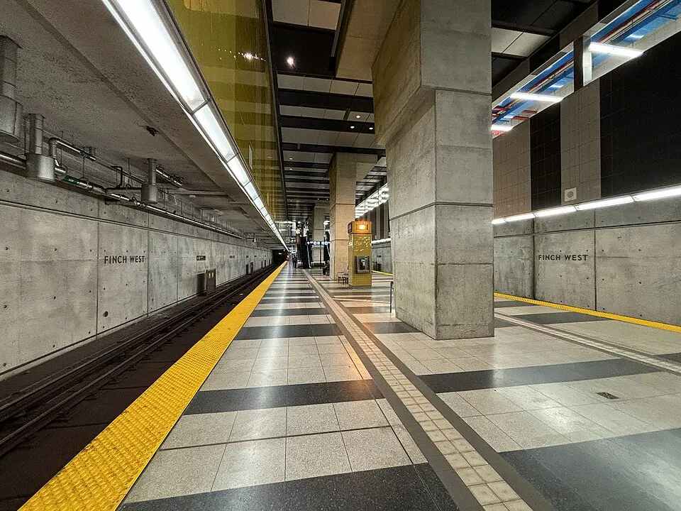

Signal
SignalStation atlas / Finch West
Station history
Finch West


Station history
The extension brought subway service to Keele and Finch. A bus terminal and parking in the nearby hydro corridor connected the surrounding neighbourhoods.
Construction photographs from February showed crews excavating the LRT station site at the southeast corner of Keele and Finch.
Line 6 began carrying passengers between Finch West and Humber College, making this station an interchange.